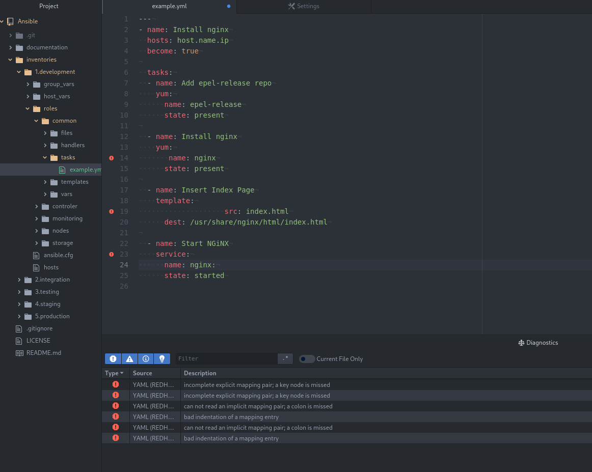

Conversation with 2345422802147713 at wto, 31 mar 2020, 09:28:44 on mateusz.stomski (facebook)
(10:08:09) Mateusz Stomski: automatyczne sprawdzanie błędów w playbookach? ;0
(10:08:14) Mateusz Stomski: 
(10:11:24) Tomasz Osławski: o, w czym to masz?
(10:13:03) Mateusz Stomski: www.atom.io
(13:12:37) Konto zostało rozłączone i użytkownik nie jest już obecny w tej konferencji. Po nawiązaniu połączenia nastąpi ponowne dołączenie.